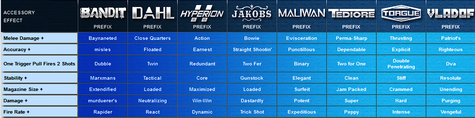
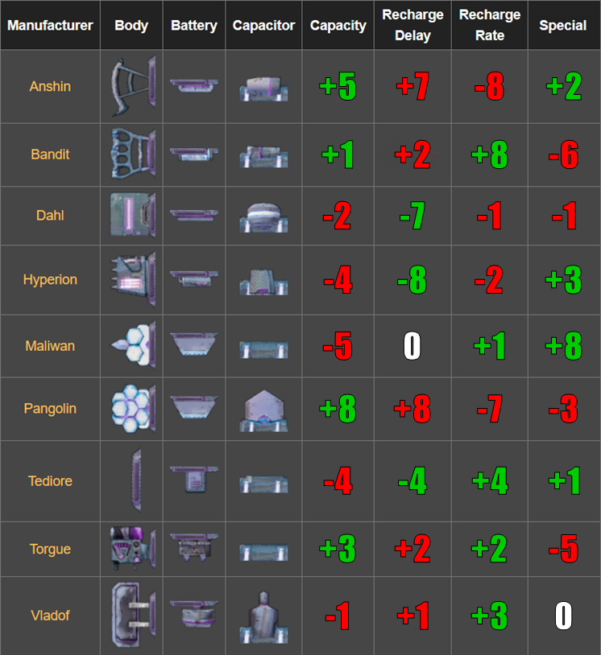
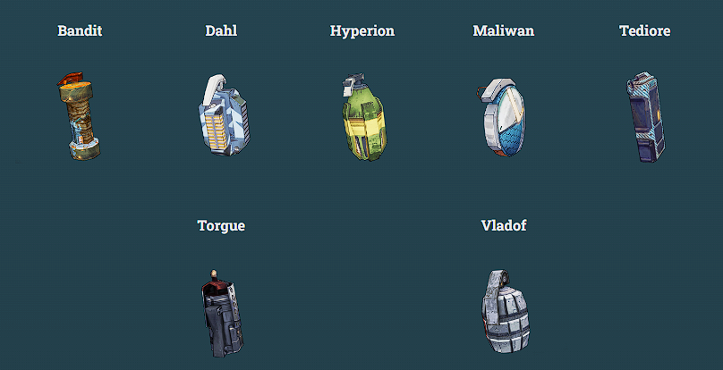

Sistema de partição de armas (Borderlands 2/The Pre-Sequel)
Provavelmente você já viu que os jogos da série de Borderlands tendem a ter uma quantidade absurda de variedade de combinações de armas possível, chegando, no total, a alguns milhões de combinações possível, porém, não é como se fosse possível fazer todas à mão, logo, um sistema de partes é usado, em que cada arma tem suas um conjunto específico de partes, tornando cada experiência de jogar única
Armas de fogo (choque, corrosão, detrito e explosão)
Todas as armas de fogo apresentam um sistema muito parecido de repartimentação, com algumas poucas diferenças entre um e outro, mas basicamente, toda arma, além do seu corpo, que define a fabricante, tem um cano, uma empunhadura, e um estoque, variando apenas para pistolas, que não apresentam estoques e para lança-mísseis, que ao invés de estoques possuem exaustores. Sabendo disso é importante ter em mente que cada fabricante possue sua próprias partes para cada tipo de armas e que alguns não fabricam todas os tipos de arma, como a Jakobs, que não faz Submetralhadoras.
Enquanto alguns modificadores são simples, outros mudam totalmetne o jogo, como o prefixo que faz a arma atirar 2x mais balas por tiro
Escudos
Escudos apresentam um sistema semelhante às armas no que se fiz a quantia de partes, todos tem 3 partes diferentes, além da peça principal, a bateria, o capacitor e o corpo, cada parte podendo ser de uma fabricante diferente, aplicando benefícios diferentes, como por exemplo, Pangolin aumenta muito a capacidade mas deixa o escudo com a recarga bem mais lenta em compensação
Do contrário, temos um sistema extremamente mais complexo para granadas, cada uma tem até 10 partes diferentes, apesar de apenas 5 serem usados em jogo para ter alguma mudança, mas resumindo, as partes consistem em: quantidade de granadas secundárias, alcance de explosão, tipo de arremesso, dano/tipo elemental e atraso na explosão.
É importante citar que o sistema apesar de ser uma brincadeira de lego entre partes e acessórios, até que simples, a sua complexidade provém da quantidade avassaladora de variações que cada arma pode ter, por exemplo, armas com a empunhadora da mesma fabricante do corpo principal recebem bônus na recarga e no tamanho dos carregadores, isso podendo ser vantajoso ou não a depender do personagem que esteja a utilizando
Como pode ser bem complexo identificar se uma arma tem partes boas ou não, em cada parte dos textos é possível encontrar um link para guias bem mais detalhados sobre cada parte de cada arma e como eles influenciam minuciosamente o jogo, além de um link para uma playlist com detalhes a fundo explicados em vídeo para cada um dos tipos de arma